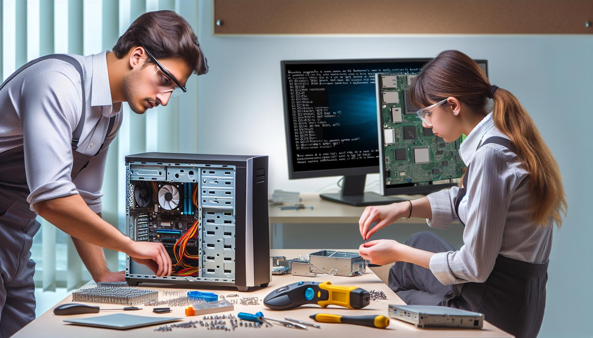

"Un mantenimiento preventivo periódico asegura un mejor rendimiento y una mayor vida útil del equipo."

"Mantén tu computador libre de polvo y residuos para evitar problemas de sobrecalentamiento y fallos en los componentes."

"Actualizar el software y los controladores regularmente mejora la seguridad y el desempeño de tu equipo."